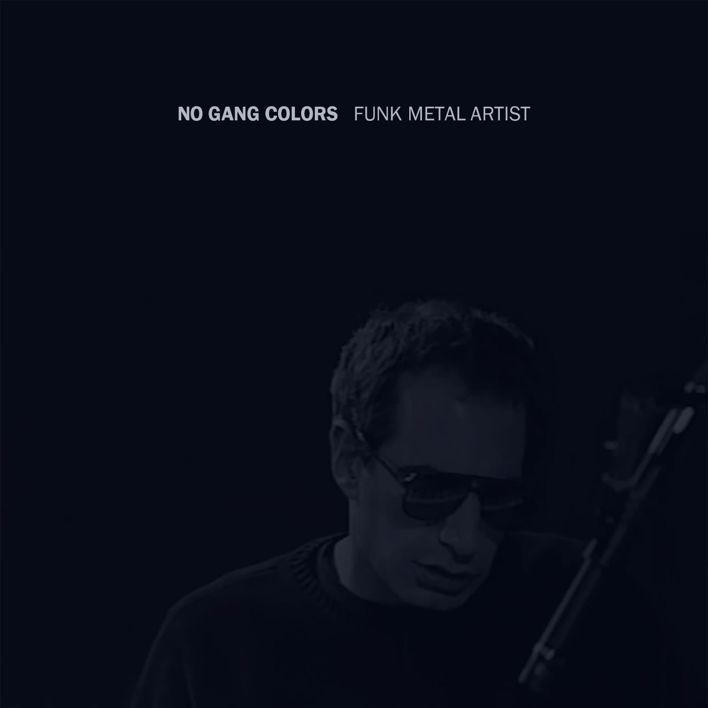

FUNK METAL ARTIST
(2015) Download: MP3

Chief Keef The Moral
Archers of Loaf Floating Friends
Archers of Loaf Let the Loser Melt
Da Bassment Gin & Juice (Remix)
Fripp & Eno An Index of Metals
OJ Da Juiceman & Beatking Drop Interlude
Chief Keef Twelve Bars
Devo U Got Me Bugged
DJ Premier Shit Is Real (Remix)
Dee Dee Ramone Reflects on Schoolly D and Dee Dee King
Scott Stapp Paranoia Tapes
Mark Mothersbaugh Osoy
DJ Premier N.Y.S.O.M. #20